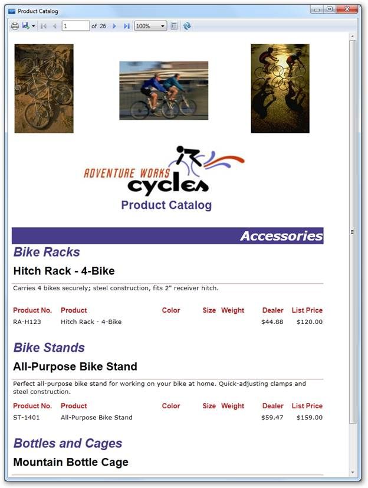

Essential Report Viewer is a rendering component for displaying reports defined in Microsoft’s RDL format (2008 or 2008 R2) on both WPF and Silverlight applications. Using Report Viewer, you can display tabular, graphical or free-form reports, which make use of relational, multi-dimensional, XML and object data source. It supports both Server and Client reports.

Figure 1: Report Viewer WPF